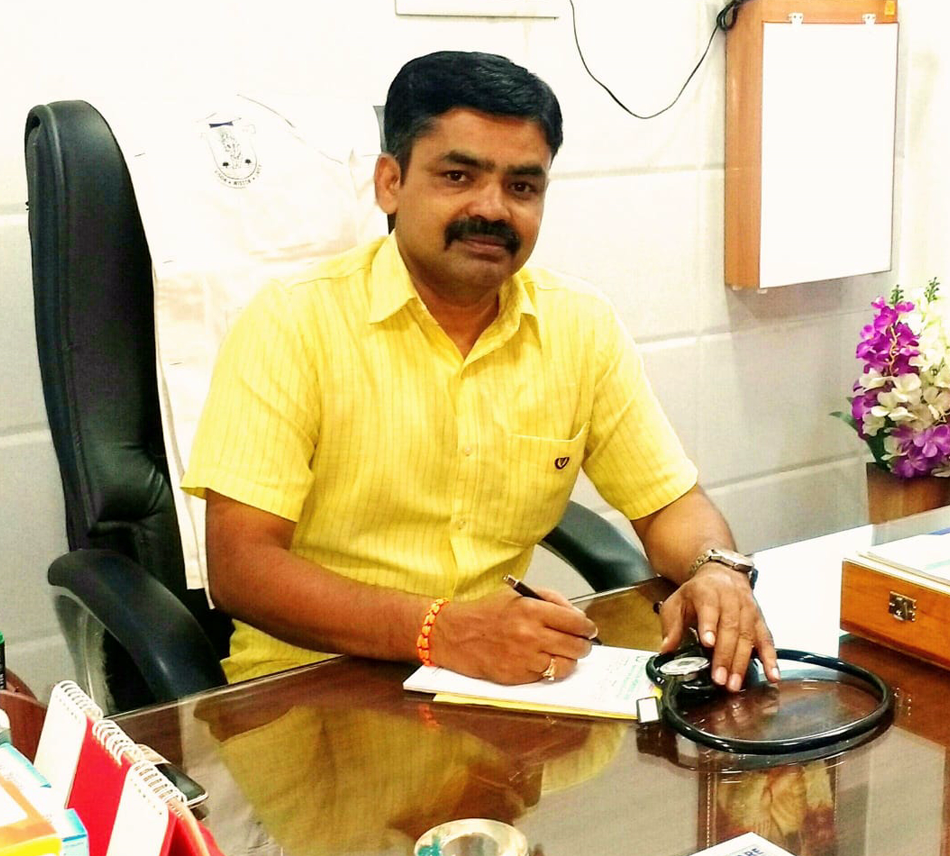

Dedicated to your wellbeing through classical homeopathy
Classical Homeocare was founded on a simple belief — that healing works best when it treats the whole person, not just the symptom. For over two decades, that belief has shaped every consultation at our clinic in Salem.

Dr. D. Ahilan brings over 23 years of professional and clinical experience in homoeopathy, treating patients with the Classical Homoeopathic Method and successfully curing many acute and chronic conditions at Classical Homeo Care. He completed his Bachelor of Homeopathic Medicine and Surgery (B.H.M.S.) from Tamil Nadu Dr. MGR Medical University in 2000, followed by his Master's Degree (M.D., Hom) from Vinayaka Missions University, Tamil Nadu.
Classical Homeo Care is a 23-year-old renowned clinic offering the best quality, non-toxic, and highly effective treatment in Salem, Tamil Nadu. Our approach is based on the traditional Classical Homeopathic Method, supported by advanced, quality German medicine. Our dedicated team works to provide efficient patient care that brings lasting healing.
Gentle, non-toxic remedies with no harsh side effects — safe for every age.
Every treatment plan is built around your history, not just your symptoms.
23+ years treating chronic and acute conditions across Salem and beyond.